Conception graphique d'un kit de médiation à destination des élu·es du département des Landes, dans le cadre de l'étude portée par le CAUE 40 et menée par l'agence Selva & Maugin : Étude des formes urbaines des villes et villages Landais, et hypothèses de densification respectueuses de la qualité urbaine.
Équipe :
Selva & Maugin — Architecture, urbanisme
Tout terrain — Architecture, urbanisme et médiation
Antoine Mounier —Architecture
Antoine Maréchal — Illustration
Clara Choulet — Graphisme
L’étude a porté sur un diagnostic des différentes situations urbaines du département des Landes :
littorales, rurales, périurbaine, etc. et des
différentes pressions et enjeux auxquelles
elles font face : tourisme, déprise, influence
des grandes agglomérations, etc.
Dans un premier temps l’objectif a été d’établir
un dagnostic précis et singulier, en réponse
à l’exigence de sobriété foncière inscrite dans
la loi ZAN : Zéro Artificialisation Nette des Sols
d’ici 2050, tout en conciliant besoins du territoire.
Dans un second temps, des pistes de densification du foncier sans artificialiser, et d’intensification du bâti sans construire, ont été élaboré pour chaque typologie.
La restitution de cette étude prend la forme
d’un panorama de la sobriété foncière,
à travers 5 posters, et 8 cartels.
Au verso : une présentation d’une typologie
et ses problématiques, et au verso, des pistes
de solutions adaptées.
La collection de poster sera diffusée dans
les communes du département et prendra
la forme d’une exposition itinérante.
En cours
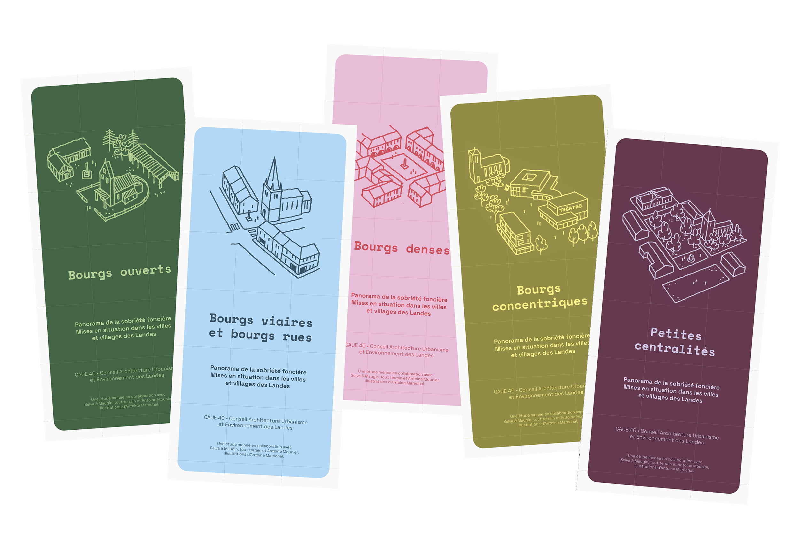
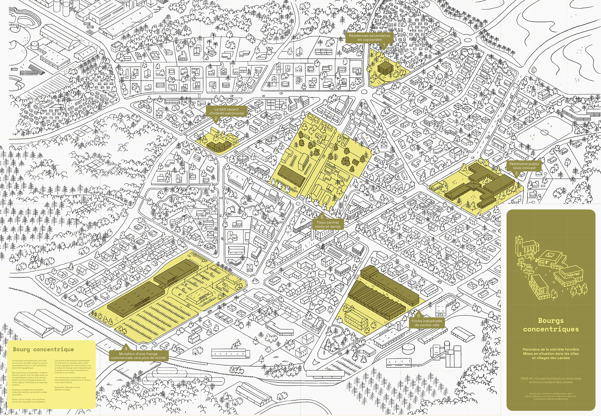
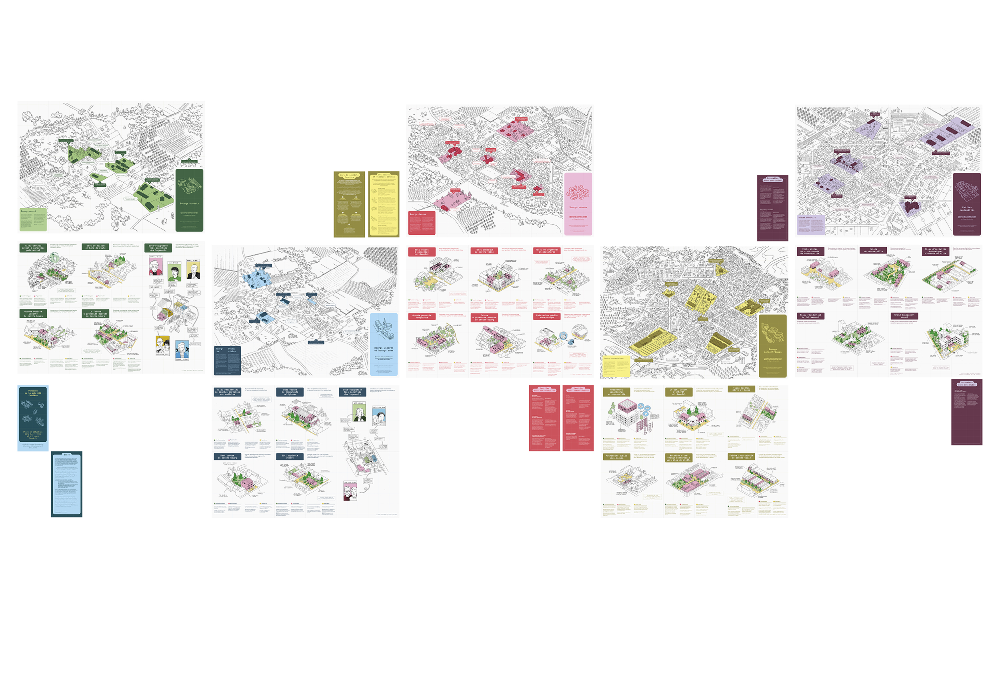
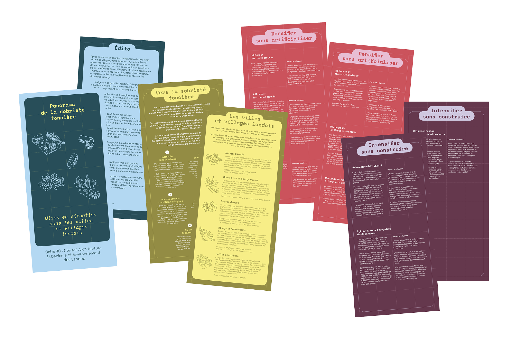
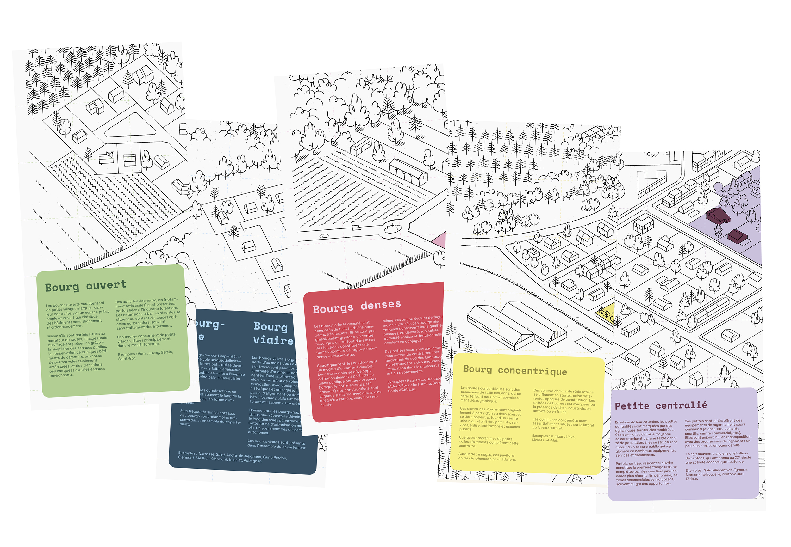
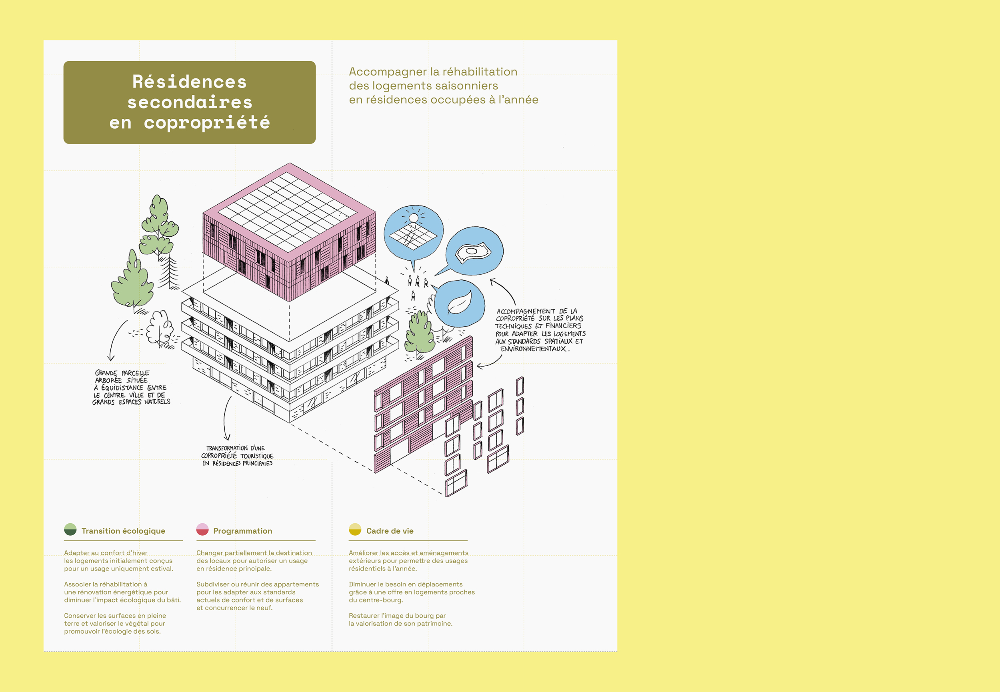
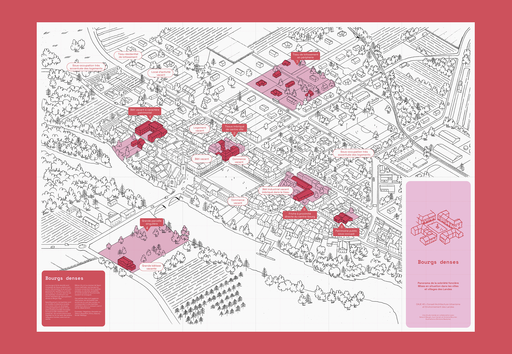
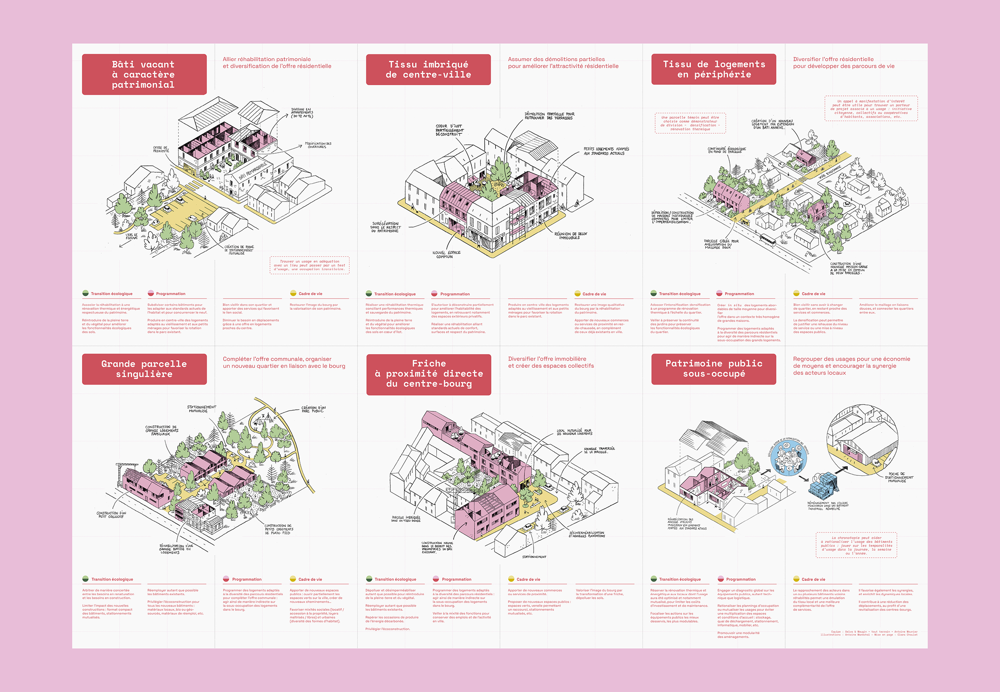
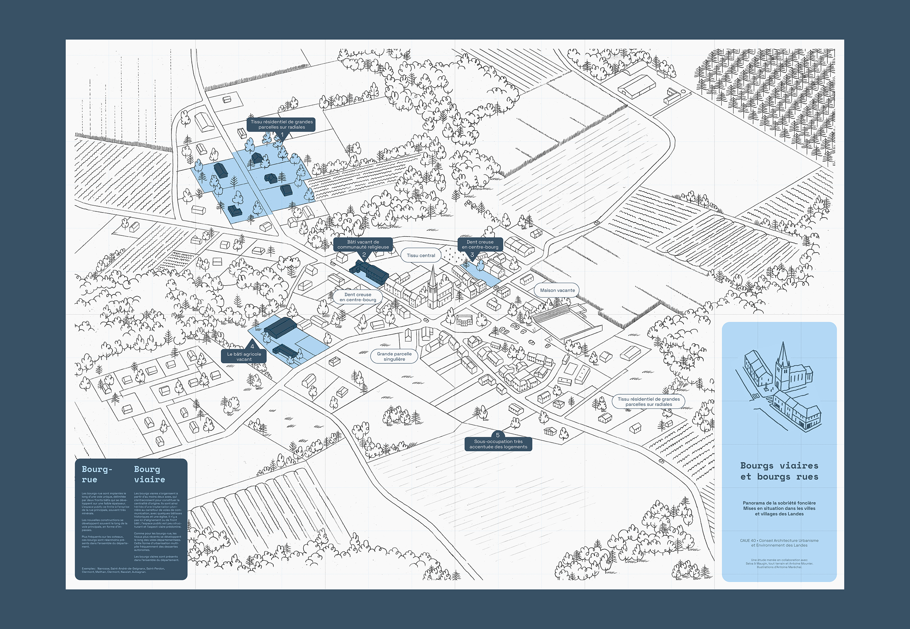
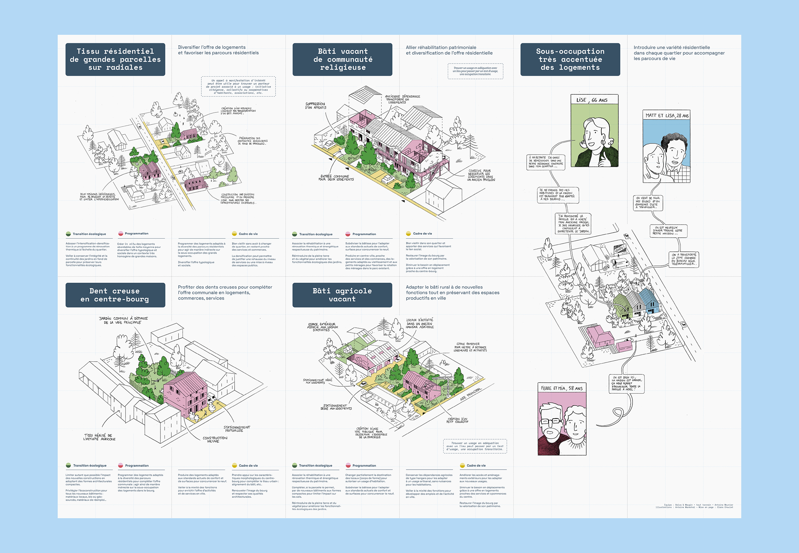
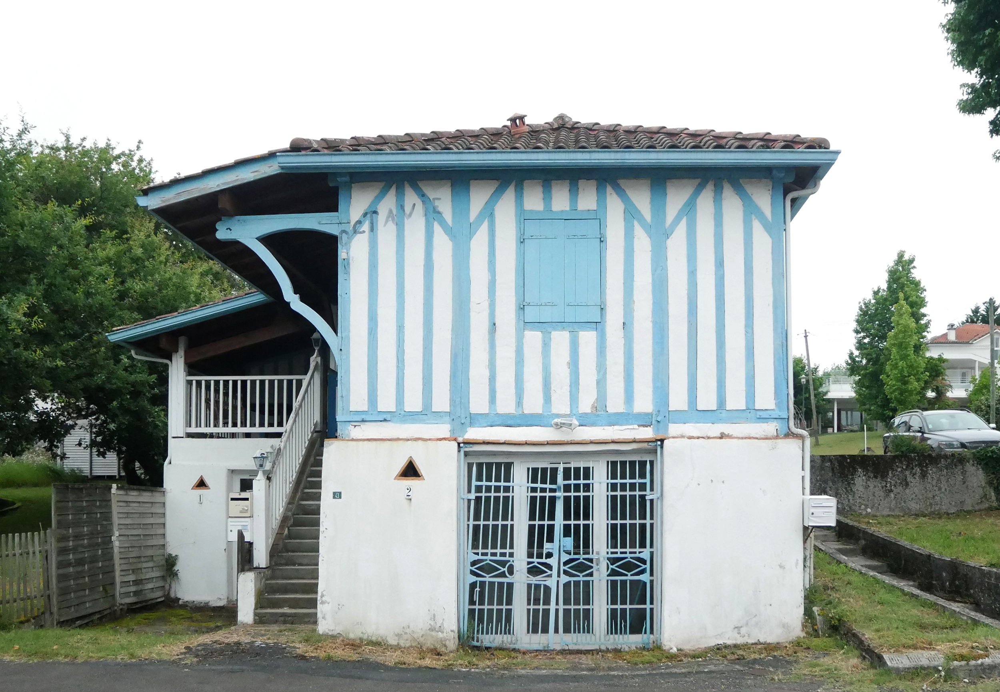
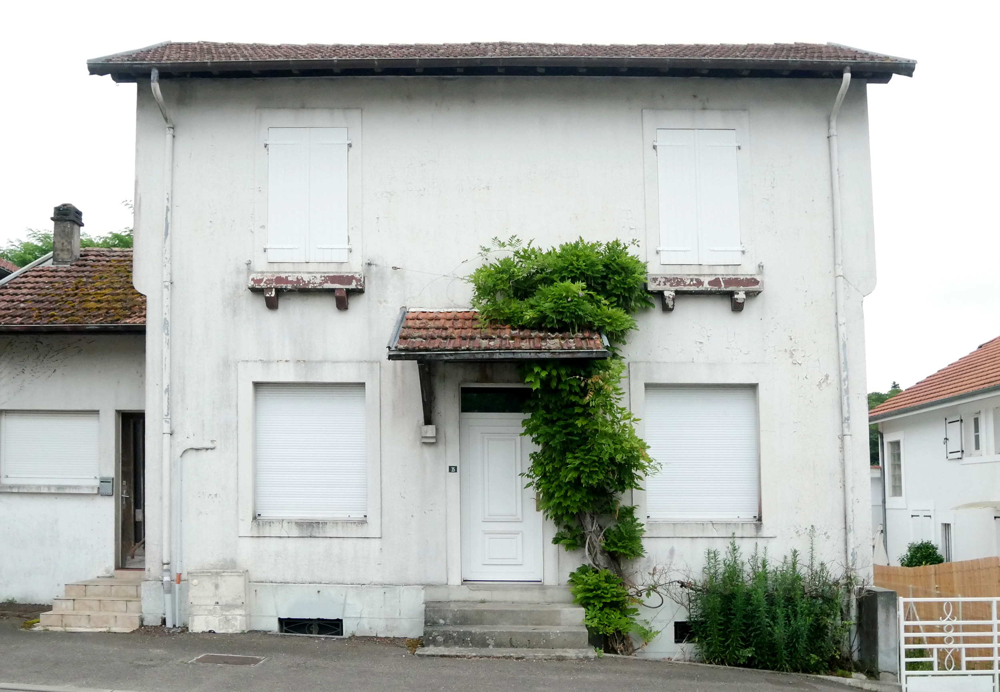
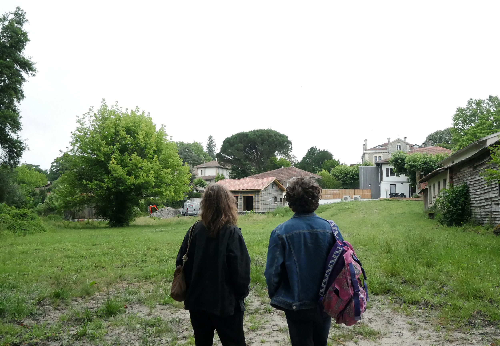